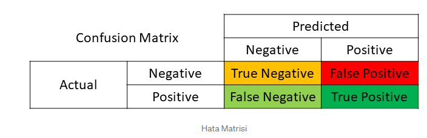
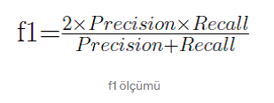

Suppose we are working on a data set. Assume that the generated classifier has a 90% success rate. Everything looks to be in order.However, when we examine the error matrix. You realize that the high accuracy rate due to a single class. So the results far from reliable.
Let’s go through the items to keep in mind while working with imbalanced datasets in further depth.
It’s a data collection in which the classes aren’t uniformly distributed and each new class has about the same amount of data. In binary classification. For example, 20 data in a data set of 100 data belong to the minority class (Class 1), and 80 data belong to the other class (Class 2).
Many machine learning techniques may not provide accurate result when dealing with imbalanced datasets because they do not account for the uneven distribution of classes. For example, lose predictive value when it comes to identifying network assaults and diagnosing unusual illnesses. The considerations we need to pay attention to while dealing with imbalanced data sets become crucial in these circumstances. Since the primary purpose to appropriately categorize the minority class (Class 1).
Accuracy, which used to measure the performance of algorithms used and trained in many classifications. However, it is not a reliable metric for measuring model performance in situations with unstable datasets.

In classification, our major objective to create classifiers with higher discriminating ability. As a result, in order to assess the model’s performance.

ROC Curve
Precision-Recall Curve
Error Matrix (Confusion Matrix)
It would be more accurate to base it on metrics.
The data should be evenly distributed throughout the training and test sets in the imbalance ratio when The data should be evenly distributed throughout the training and test sets in the imbalance ratio when In other words, maintaining the same ratio of classes in both clusters is critical for the model’s performance to remain stable.
We can make imbalanced datasets more balanced by resampling. To accomplish so, the first technique to create classes with an equal quantity of data by using different methods to increase data from the minority class (Class 1).
Balance may also be accomplished by using the interpolation approach in the SMOTE (Synthetic Minority Oversampling Technique) and ADASYN (Adaptive Synthetic Sampling Method) algorithms to generate synthetic data.
The alternative option to remove data from the weighted class (Class 2) from the data set to create a balanced data set. If the data set you’re dealing with isn’t big enough, you should use another approach instead, since this one will result in information loss. In addition to this, the SMOTEENN and SMOTETomek approaches, which combine oversampling and undersampling, used to establish balance.
It’s important to remember that before training the machine learning algorithms, you should use the approaches I stated above to balance the training data. That, it critical that the test data (test data) we use to evaluate the model’s performance come from the original data.
You can find a lot of information on the subject here.
Please click for more information.